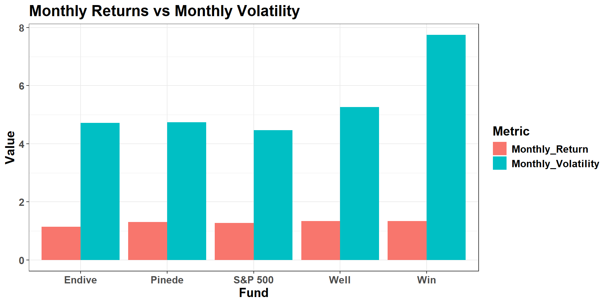
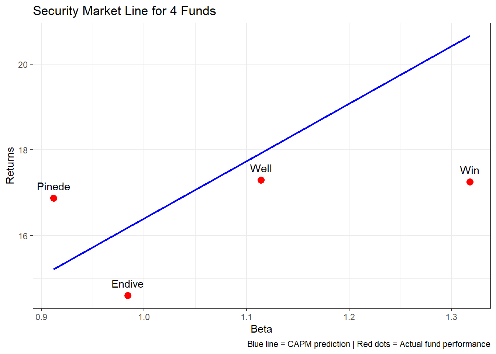
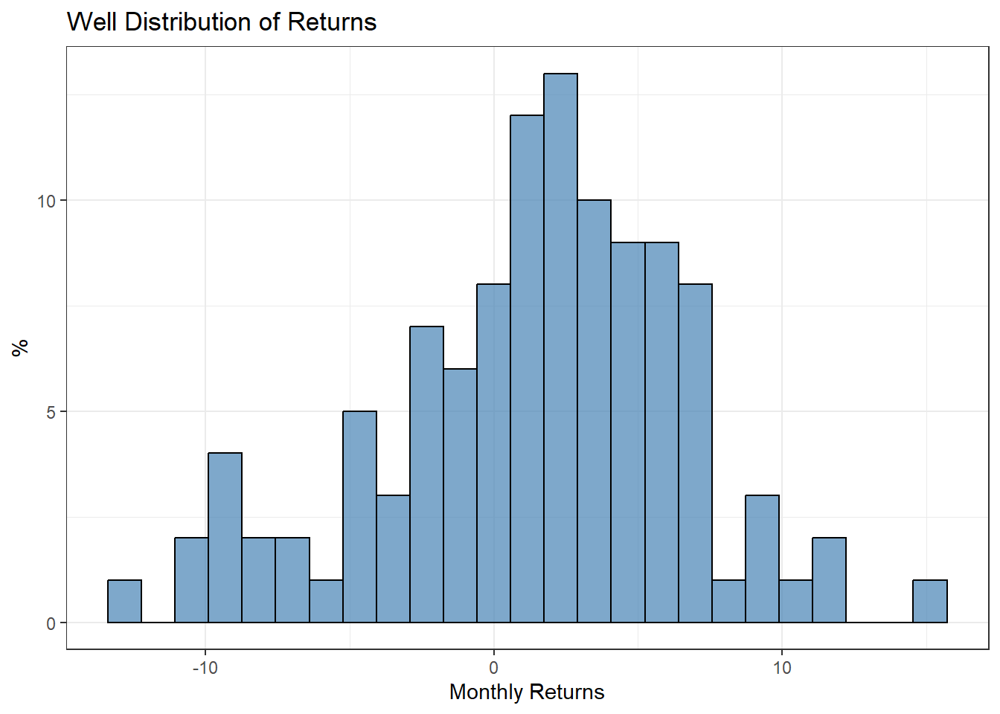
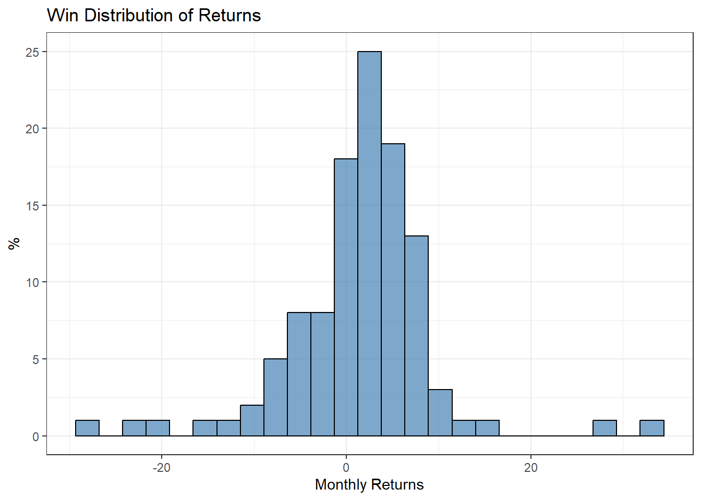

Show the code
library(readxl)
library(dplyr)
library(tidyr)
library(ggplot2)
library(kableExtra)
data <- read_excel("STA9713 Data Project 1.xlsx", skip = 4)
data$Pinede[data$Pinede == "--"] <- NA
data$Pinede <- as.numeric(data$Pinede)Giulio Orazzo
October 30, 2025
The first step is to load the data-set and the necessary libraries.
In the code below I calculated the average of the monthly returns, and the monthly volatility (standard deviation), for each of the 4 Funds and the S&P 500. I then annualized both returns and volatilities. Finally i combined these calculations in one dataframe, for ease of use.
# calculating the mean of monthly returns
sp_mean <-mean(data$`S&P 500 Index Fund`, na.rm = TRUE)
well_mean<- mean(data$Well , na.rm = TRUE)
endive_mean <- mean(data$Endive, na.rm = TRUE)
win_mean <- mean(data$Win, na.rm = TRUE)
pinede_mean <- mean(data$Pinede, na.rm = TRUE)
# calculating the volatility
sp_vol <- sd(data$`S&P 500 Index Fund`, na.rm = TRUE)
well_vol<- sd(data$Well , na.rm = TRUE)
endive_vol <- sd(data$Endive, na.rm = TRUE)
win_vol <- sd(data$Win, na.rm = TRUE)
pinede_vol <- sd(data$Pinede, na.rm = TRUE)
# ANNUALIZED vol
annualized_sp_vol <- sp_vol * sqrt(12)
annualized_well_vol<- well_vol * sqrt(12)
annualized_endive_vol <- endive_vol * sqrt(12)
annualized_win_vol <- win_vol * sqrt(12)
annualized_pinede_vol<- pinede_vol * sqrt(12)
# ANNUALIZED returns
annualized_sp_ret <- ((1+ sp_mean/100)^12 -1) *100
annualized_well_ret<- ((1 + well_mean/100)^12 -1)*100
annualized_endive_ret <- ((1 + endive_mean/100)^12 -1)*100
annualized_win_ret <-((1 + win_mean/100)^12 -1)*100
annualized_pinede_ret<- ((1+ pinede_mean/100)^12 -1)*100
# combining the data
fund_name <- c("S&P 500", "Endive", "Well", "Win", "Pinede")
mean_returns <- c(sp_mean , endive_mean, well_mean, win_mean, pinede_mean)
volatilities <- c(sp_vol, endive_vol, well_vol, win_vol, pinede_vol)
annual_returns <- c (annualized_sp_ret, annualized_endive_ret, annualized_well_ret, annualized_win_ret, annualized_pinede_ret)
annual_volatilities <- c (annualized_sp_vol, annualized_endive_vol, annualized_well_vol, annualized_win_vol, annualized_pinede_vol)
combined_data <- data.frame(
Fund = fund_name,
Monthly_Return = mean_returns,
Monthly_Volatility = volatilities,
Annual_Return = annual_returns,
Annual_Volatility = annual_volatilities
)The section below shows the code and the answer to the Project Questions
The graph below shows a comparison between the peromance and volatility of the 4 Funds analyzed, along with the S&P 500.
| Fund | Monthly Return % | Monthly Volatility % | Annual Return % | Annual Volatility % |
|---|---|---|---|---|
| S&P 500 | 1.27 | 4.47 | 16.40 | 15.49 |
| Endive | 1.14 | 4.71 | 14.61 | 16.33 |
| Well | 1.34 | 5.26 | 17.30 | 18.23 |
| Win | 1.34 | 7.75 | 17.25 | 26.83 |
| Pinede | 1.31 | 4.74 | 16.88 | 16.42 |
The graph below show a comparison of the the monthly returns and monthly volatilities.
summary_long <- pivot_longer(combined_data,
cols = c("Monthly_Return", "Monthly_Volatility"),
names_to = "Metric",
values_to = "Value")
ggplot(summary_long, aes(x = Fund , y = Value, fill = Metric))+
geom_bar(stat = "identity", position = "dodge")+
labs( title = "Monthly Returns vs Monthly Volatility")+
theme_bw()+
theme(text = element_text(family = "Helvetica", size = 15, face = "bold"))
The code below calculates the risk-return (Sharpe, Sortino)ratio for the Endive Fund
# calculating the sharpe ratio with montlhy riskfree rate of 0.2%
rf_monthly <- 0.2
endive_sharpe <- (endive_mean - rf_monthly) / endive_vol
#sortino ratio
endive_downside_ret <- data$Endive[data$Endive < 0]
endive_downside_dev <- sd(endive_downside_ret)
endive_sortino <- (endive_mean - rf_monthly) / endive_downside_devThe Sharpe Ratio for Endive is 0.2. The Sortino Ratio is 0.3
The code below calculates the 95% Confidence Interval for the true return of Endive
The mean monthly return for Endive is 1.14% with standard deviation of 4.71%. The 95% Confidence Interval for the true mean return: 0.25% to 2.03%
Assuming the returns of Well follow a normal distribution, the code below calculates the probability that the average return of 4 randomly selected months is greater than 2%.
The probability that the average return of 4 randomly selected months is greater than 2% is 40.08% .
The code below calculates the z-score of the 20% percentile.
The theoretical 20% percentile for Well is -3.09%. According to the fitted normal distribution, 20% of the time the monthly return is worse than -3.09%.
Assuming a 3% risk-free rate and the S&P 500 as the “market”, the code below calculates the expected returns using the CAPM equation for the 4 Funds
# calculating each fund linear regression
well_model <- lm(data$Well ~ data$`S&P 500 Index Fund`)
well_beta <- as.numeric(coef(well_model)[2])
endive_model <- lm(data$Endive ~ data$`S&P 500 Index Fund`)
endive_beta <- as.numeric(coef(endive_model)[2])
win_model<- lm(data$Win ~ data$`S&P 500 Index Fund`)
win_beta <- as.numeric(coef(win_model)[2])
pinede_model<- lm(data$Pinede ~ data$`S&P 500 Index Fund`)
pinede_beta <- as.numeric(coef(pinede_model)[2])
# calculating Expeced Returns using CAPM assuming A 3% rf
rf <- 3
endive_exp_ret <- rf + endive_beta * (annualized_sp_ret - rf)
well_exp_ret <- rf + well_beta * (annualized_sp_ret - rf)
win_exp_ret <- rf + win_beta * (annualized_sp_ret - rf)
pinede_exp_ret <- rf + pinede_beta * (annualized_sp_ret - rf)
# binding the data
fund_names <- c("Endive", "Well", "Win", "Pinede")
beta <- c( endive_beta, well_beta, win_beta, pinede_beta)
expected_ret <- c(endive_exp_ret, well_exp_ret, win_exp_ret,pinede_exp_ret)
CAPM_data <- data.frame(
Fund = fund_names,
Beta = beta,
Expected_Return = expected_ret)| Fund | Beta | Annual Expected Return % |
|---|---|---|
| Endive | 0.98 | 16.19 |
| Well | 1.11 | 17.93 |
| Win | 1.32 | 20.66 |
| Pinede | 0.91 | 15.22 |
The beta of the Funds represent their correlation to the market(S&P500). Using the CAPM equation, we can observe the Annual Expected Return percentage for the 4 Funds.
The code below calculates the alphas(intercepts) of the 4 Funds
endive_alpha <- as.numeric(coef(endive_model)[1])
well_alpha <- as.numeric(coef(well_model)[1])
win_alpha <- as.numeric(coef(win_model)[1])
pinede_alpha <- as.numeric(coef(pinede_model)[1])
# adding alphas to the dataset
alphas <- c(endive_alpha, well_alpha, win_alpha, pinede_alpha)
CAPM_data$Alpha <- alphas
# adding the actual returns
CAPM_data$Actual_Return <- as.numeric(c(annualized_endive_ret, annualized_well_ret,annualized_win_ret, annualized_pinede_ret))| Fund | Alpha |
|---|---|
| Endive | -0.11 |
| Well | -0.08 |
| Win | -0.34 |
| Pinede | 0.07 |
The alphas are different than 0 for all 4 Funds.
The code below plots the 4 Funds on the Security Market Line
ggplot()+
geom_line( data = CAPM_data, aes(x = Beta, y = Expected_Return),
color = "blue", linewidth = 1)+
geom_point(data = CAPM_data, aes(x = Beta, y = Actual_Return),
color = "red", size = 3)+
geom_text(data = CAPM_data, aes(x = Beta, y = Actual_Return, label = Fund),
vjust = -1)+
labs(
title = "Security Market Line for 4 Funds",
x = "Beta",
y = "Returns",
caption = "Blue line = CAPM prediction | Red dots = Actual fund performance"
)+
theme_bw()
The blue line in th graph represents the CAPM Prediction, meaning the the expected return for the Funds, taking in consideration their correlation to the market(S&P 500). The red dots represent the actual annual return.
It is observed that:
The graphs below show the distribution of returns for Well and Win.


The code below calculates the t-test for Well and Win
Welch Two Sample t-test
data: data$Well and data$Win
t = 0.0038286, df = 191.94, p-value = 0.9969
alternative hypothesis: true difference in means is not equal to 0
95 percent confidence interval:
-1.757726 1.764564
sample estimates:
mean of x mean of y
1.338512 1.335094 The p-value of 0.9969, fail to reject the null hypothesis H0. This indicates that the average returns for Well and Win are not statistically different.
The code below calculates the number of months that have positive return for Endive and Well.
Endive has 72 positive months out of 110 total months.
Well has 74 positive months out of 110 total months.
Well has the better batting average.
* Prepared for STA 9713 at Baruch College - Giulio Orazzo